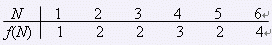

科学家们在 Samuel 星球上的探险得到了丰畜的能源储备，这使得空间站中大细计算机“Samuel II”的长时间运算成为了可能。由于在去年一年的辛苦工作取得了不错的成绩，小联被允许用“Samuel II”进行数学研究。
小联最近在研究和约数有关的问题，他统计每个正数 $N$ 的约数的个数，并以 $f(N)$ 来表示。例如 $12$ 的约数有 1、2、3、4、6、12。因此 $f(12)=6$。下表给出了一些 $f(N)$ 的取值：

现在小联希望用“Samuel II”来统计 $f(1)$ 到 $f(N)$ 的累加和 $M$。
$M=\sum\limits_{i=1}^{n}f(i)$
 Comet OJ
Comet OJ